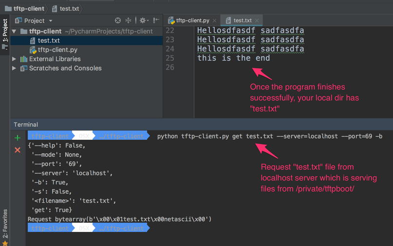

A little python to alleviate math programming

Hello Pythonistas , In this blog post we are trying to see how can we represent the mathematical formula that uses summation notation in Python. I am not really a math lover so whenever i see something represented in this kind of formula , i get nervous about whether i will be able to handle it or not.
Gini Coefficient

This excerpt has been taken from Economics simulation.
As seen in the formula , i goes from 1 to n which can be done using for loop ** for i in range(n) ** for numerator , we can see that for each i we are performing ** ( i * y[i] ) and finally there is sum() function which is replacing the sigma.
for the denominator we are not doing any alteration on each iteration we can simply invoke sum() on y
def gini(y):
"Compute the Gini coefficient (a measure of equality/inequality) in a population, y."
y = sorted(y)
n = len(y)
numer = 2 * sum((i) * y[i] for i in range(1, n))
denom = n * sum(y)
return (numer / denom) - (n + 1) / n
Chained comparisons
In [2]: x = 10
In [3]: y = 20
In [4]: 15 > x and 15 < y
Out[4]: True
In [5]: x < 15 < y
Out[5]: True
Simulating Roulle spins

How to perform Six roulette wheel spins (weighted sampling with replacement) There are 18 Red slots , 18 black slots and 6 green slots. .. code:: python
>>> from random import *
>>> choices(['red', 'black', 'green'], [18, 18, 2], k=6)
['red', 'green', 'black', 'black', 'red', 'black']
Biased Coins
>>> # Estimate the probability of getting 5 or more heads from 7 spins
>>> # of a biased coin that settles on heads 60% of the time.
>>> trial = lambda: choices('HT', cum_weights=(0.60, 1.00), k=7).count('H') >= 5
>>> sum(trial() for i in range(10000)) / 10000
0.4169
Python’s random module : Real-valued distributions

Hello Pythonistas , In my opinion the better to understand distributions is to visualize them.
Uniform Distrubution
Lets say , you would like to create random numbers between 2000 and 3000 such that the generated values are uniformly distributed over the range. Here we are creating 1000 values over the range. Histogram is really useful tool to bucketize a given set of values into given buckets.
import matplotlib.pyplot as plt
from random import *
population_data = [uniform(2000, 3000) for i in range(1000)]
plt.hist(population_data, bins=30, histtype="bar", rwidth=0.8)
plt.title("Uniform distribution")
plt.show()
Triangular Distribution
Lets say , you would like to create random numbers between 2000 and 3000 such that the generated values are triangularly distributed over the range. What i mean by Triangulary distributed is; mid point between 2000 and 3000 is 2500. so more values will generated around this midpoint rather than towards both the ends of range like less values towards 2000 and less values towards 3000.
import matplotlib.pyplot as plt
from random import *
population_data = [triangular(2000, 3000) for i in range(1000)]
plt.hist(population_data, bins=30, histtype="bar", rwidth=0.8)
plt.title("Triangular distribution")
plt.show()
Gaussian Distribution
Sometimes when you wish to tightly control the values generated around midpoint. In gaussian distribution you specify the mean and the max variation thats allowed from mean. [ Standard Deviation ]
In this example we generate values such that the mean is 2500 and allowed variation from mean is 15. If you carefully look at the output and compare it to Triangular distribution , you will see that density of values around mean is way higher than its seen with Triangular distribution.
In fact all the values are between 2460 to 2540
import matplotlib.pyplot as plt
from random import *
population_data = [gauss(2500, 15) for i in range(1000)]
plt.hist(population_data, bins=30, histtype="bar", rwidth=0.8)
plt.title("Gaussian distribution")
plt.show()

Expovariate Distribution
This is also another useful distribution where you would like to simulate
- arrival times of customer
- arrival of network packets
for example when you go to bank , you can see that customers arrive randomly. sometimes they come in a bunch, but every once a in while there is no one.
Same thing hanppens with network packets , they come in a bunch and sometimes there is no network traffic.
average_arrival_interval = 5.6
import matplotlib.pyplot as plt
from random import *
population_data = [expovariate(1/5.6) for i in range(1000)]
plt.hist(population_data, bins=30, histtype="bar", rwidth=0.8)
plt.title("Expovariate distribution")
plt.show()

Now if you are thinking where you would use these distributions, Random module has a great section on example and Recipe’s Example
Simulation of arrival times and service deliveries in a single server queue:
from random import expovariate, gauss
from statistics import mean, median, stdev
average_arrival_interval = 5.6
average_service_time = 5.0
stdev_service_time = 0.5
num_waiting = 0
arrivals = []
starts = []
arrival = service_end = 0.0
for i in range(20000):
if arrival <= service_end:
num_waiting += 1
# see how expovariate is used to simulate arrival times
arrival += expovariate(1.0 / average_arrival_interval)
arrivals.append(arrival)
else:
num_waiting -= 1
service_start = service_end if num_waiting else arrival
# see how gaussian is used to get the average service time by allowing margin
# for variability in servicing requests.
service_time = gauss(average_service_time, stdev_service_time)
service_end = service_start + service_time
starts.append(service_start)
waits = [start - arrival for arrival, start in zip(arrivals, starts)]
print(f'Mean wait: {mean(waits):.1f}. Stdev wait: {stdev(waits):.1f}.')
print(f'Median wait: {median(waits):.1f}. Max wait: {max(waits):.1f}.')
Bonus - Dont miss the See Also section
See also Statistics for Hackers a video tutorial by Jake Vanderplas on statistical analysis using just a few fundamental concepts including simulation, sampling, shuffling, and cross-validation.
Economics Simulation a simulation of a marketplace by Peter Norvig that shows effective use of many of the tools and distributions provided by this module (gauss, uniform, sample, betavariate, choice, triangular, and randrange).
A Concrete Introduction to Probability (using Python) a tutorial by Peter Norvig covering the basics of probability theory, how to write simulations, and how to perform data analysis using Python.
Understanding TFTP protocol and write TFTP client in Python

Hello Pythonistas, TFTP [ Trivial File Transfer Protocol ] is a light weight file transfer protocol, there is really not much to it as seen in the above picture. Its a UDP [ User datagram protocol ] protocol. There are connection oriented and connectionless protocols and TFTP falls under the later category.
Without getting into too much of technical details , lets see how the protocol plays in action. On my mac i have set up TFTP server and there is builtin tftp client
env OSX …/CLIENT tftp
tftp> ?
Commands may be abbreviated. Commands are:
connect connect to remote tftp
mode set file transfer mode
put send file
get receive file
quit exit tftp
verbose toggle verbose mode
blksize set an alternative blocksize (def. 512)
tsize toggle extended tsize option
trace toggle packet tracing
status show current status
binary set mode to octet
ascii set mode to netascii
rexmt set per-packet retransmission timeout
timeout set total retransmission timeout
tout toggle extended timeout option
? print help information
tftp> connect localhost
tftp> trace
Packet tracing on.
tftp> status
Connected to localhost.
Mode: netascii Verbose: off Tracing: on
Rexmt-interval: 5 seconds, Max-timeout: 25 seconds
tftp> get test.txt test.txt
sent RRQ <file=test.txt, mode=netascii>
received DATA <block=1, 512 bytes>
sent ACK <block=1>
received DATA <block=2, 64 bytes>
Received 576 bytes in 0.0 seconds
Protocol in action summary:
As shown above the protocol can be seen in action on the last 6 lines or so.
- Client sends a Read Request specifying a file and mode. [ We can see opcodes for that in RFC ]
- Server responds with block of data along with block number.
- Client sends an ACK for the received block
- Server sends next data with incremented block number and ……
- Normal Termination - This excerpt is taken directly from RFC 1350
The end of a transfer is marked by a DATA packet that contains between 0 and 511 bytes of data (i.e., Datagram length < 516). This packet is acknowledged by an ACK packet like all other DATA packets. The host acknowledging the final DATA packet may terminate its side of the connection on sending the final ACK.
Opcode Operation 1 Read request (RRQ) 2 Write request (WRQ) 3 Data (DATA) 4 Acknowledgment (ACK) 5 Error (ERROR)
How to start TFTP server on Mac ?
sudo launchctl load -F /System/Library/LaunchDaemons/tftp.plist
sudo launchctl start com.apple.tftpd
The directory that serves files is /private/tftpboot.
To stop the TFTP server, either reboot or use this command:
sudo launchctl unload -F /System/Library/LaunchDaemons/tftp.plist
Now lets look at the command line interface of the application that we wish to create
tftp-client OSX …/tftp-client python tftp-client.py -h
tftp-client.
Usage:
tftp-client.py get <filename> [[-s | -b ] --mode=<mode>]
tftp-client.py (-h | --help)
Options:
-h --help Show this screen.
-s Use python struct to build request.
-b Use python bytearray to build request.
--mode=<mode> TFTP transfer mode : "netascii", "octet", or "mail"
Once we know the interface, lets see how we can code it.
Algorithm:
- Get the server and port information
- Get the mode information [ Set default to netascii ]
- Send the Read Request
- Go in a while loop and read the data that server sends
- If server sends error -> Quit
- If server sends proper data packet , send ack for each packet.
- If the length of the received data is less than 516 -> This is the last packet; so Quit.
"""tftp-client.
Usage:
tftp-client.py get <filename> [[-s | -b ] --mode=<mode>]
tftp-client.py (-h | --help)
Options:
-h --help Show this screen.
-s Use python struct to build request.
-b Use python bytearray to build request.
--mode=<mode> TFTP transfer mode : "netascii", "octet", or "mail"
"""
from docopt import docopt
import socket
from struct import pack
"""
opcode operation
1 Read request (RRQ)
2 Write request (WRQ)
3 Data (DATA)
4 Acknowledgment (ACK)
5 Error (ERROR)
>>>>>>>>>>>>>>>>>>>>>>>>>>>>>>>>>>>>>>>>>>>>>>>>>>>>>>>>>>>>>>
2 bytes string 1 byte string 1 byte
------------------------------------------------
| Opcode | Filename | 0 | Mode | 0 |
------------------------------------------------
Figure 5-1: RRQ/WRQ packet
The [[ Mode ]] field contains the
string "netascii", "octet", or "mail" (or any combination of upper
and lower case, such as "NETASCII", NetAscii", etc.)
>>>>>>>>>>>>>>>>>>>>>>>>>>>>>>>>>>>>>>>>>>>>>>>>>>>>>>>>>>>>>>>
2 bytes 2 bytes
---------------------
| Opcode | Block # |
---------------------
Figure 5-3: ACK packet
>>>>>>>>>>>>>>>>>>>>>>>>>>>>>>>>>>>>>>>>>>>>>>>>>>>>>>>>>>>>>>>
2 bytes 2 bytes n bytes
----------------------------------
| Opcode | Block # | Data |
----------------------------------
Figure 5-2: DATA packet
>>>>>>>>>>>>>>>>>>>>>>>>>>>>>>>>>>>>>>>>>>>>>>>>>>>>>>>>>>>>>>>>
TFTP Formats
Type Op # Format without header
2 bytes string 1 byte string 1 byte
-----------------------------------------------
RRQ/ | 01/02 | Filename | 0 | Mode | 0 |
WRQ -----------------------------------------------
2 bytes 2 bytes n bytes
---------------------------------
DATA | 03 | Block # | Data |
---------------------------------
2 bytes 2 bytes
-------------------
ACK | 04 | Block # |
--------------------
2 bytes 2 bytes string 1 byte
----------------------------------------
ERROR | 05 | ErrorCode | ErrMsg | 0 |
----------------------------------------
Error Codes
Value Meaning
0 Not defined, see error message (if any).
1 File not found.
2 Access violation.
3 Disk full or allocation exceeded.
4 Illegal TFTP operation.
5 Unknown transfer ID.
6 File already exists.
7 No such user.
====================
Protocol in action
====================
As shown above the protocol can be seen in action on the last 6 lines or so.
1. Client sends a Read Request specifying a file and mode. [ We can see opcodes for that in RFC ]
2. Server responds with block of data along with block number.
3. Client sends an ACK for the received block
4. Server sends next data with incremented block number and ......
** Normal Termination ** - This excerpt is taken directly from `RFC 1350 <https://tools.ietf.org/html/rfc1350/>`_
The end of a transfer is marked by a DATA packet that contains
between 0 and 511 bytes of data (i.e., Datagram length < 516). This
packet is acknowledged by an ACK packet like all other DATA packets.
The host acknowledging the final DATA packet may terminate its side
of the connection on sending the final ACK.
"""
TERMINATING_DATA_LENGTH = 516
TFTP_TRANSFER_MODE = b'netascii'
TFTP_OPCODES = {
'unknown': 0,
'read': 1, # RRQ
'write': 2, # WRQ
'data': 3, # DATA
'ack': 4, # ACKNOWLEDGMENT
'error': 5} # ERROR
TFTP_MODES = {
'unknown': 0,
'netascii': 1,
'octet': 2,
'mail': 3}
# Create a UDP socket
sock = socket.socket(socket.AF_INET, socket.SOCK_DGRAM)
server_address = ('localhost', 69)
def send_rq(filename, mode):
"""
This function constructs the request packet in the format below.
Demonstrates how we can construct a packet using bytearray.
Type Op # Format without header
2 bytes string 1 byte string 1 byte
-----------------------------------------------
RRQ/ | 01/02 | Filename | 0 | Mode | 0 |
WRQ -----------------------------------------------
:param filename:
:return:
"""
request = bytearray()
# First two bytes opcode - for read request
request.append(0)
request.append(1)
# append the filename you are interested in
filename = bytearray(filename.encode('utf-8'))
request += filename
# append the null terminator
request.append(0)
# append the mode of transfer
form = bytearray(bytes(mode, 'utf-8'))
request += form
# append the last byte
request.append(0)
print(f"Request {request}")
sent = sock.sendto(request, server_address)
def send_rq_struct(filename, mode):
"""
This function constructs the request packet in the format below
Demonstrates how we can construct a packet using struct.
Type Op # Format without header
2 bytes string 1 byte string 1 byte
-----------------------------------------------
RRQ/ | 01/02 | Filename | 0 | Mode | 0 |
WRQ -----------------------------------------------
:param filename:
:return:
"""
formatter = '>h{}sB{}sB' # { > - Big Endian, h - short , s - char, B - 1 byte }
formatter = formatter.format(len(filename), len('netascii'))
print(formatter) # final format '>h8sB8sB'
request = pack(formatter, TFTP_OPCODES['read'], bytes(filename, 'utf-8'), 0, bytes(mode, 'utf-8'), 0)
print(f"Request {request}")
sent = sock.sendto(request, server_address)
def send_ack(ack_data, server):
"""
This function constructs the ack using the bytearray.
We dont change the block number cause when server sends data it already has
block number in it.
2 bytes 2 bytes
-------------------
ACK | 04 | Block # |
--------------------
:param ack_data:
:param server:
:return:
"""
ack = bytearray(ack_data)
ack[0] = 0
ack[1] = TFTP_OPCODES['ack']
print(ack)
sock.sendto(ack, server)
def server_error(data):
"""
We are checking if the server is reporting an error
2 bytes 2 bytes string 1 byte
----------------------------------------
ERROR | 05 | ErrorCode | ErrMsg | 0 |
----------------------------------------
:param data:
:return:
"""
opcode = data[:2]
return int.from_bytes(opcode, byteorder='big') == TFTP_OPCODES['error']
# Map server error codes to messages [ Taken from RFC-1350 ]
server_error_msg = {
0: "Not defined, see error message (if any).",
1: "File not found.",
2: "Access violation.",
3: "Disk full or allocation exceeded.",
4: "Illegal TFTP operation.",
5: "Unknown transfer ID.",
6: "File already exists.",
7: "No such user."
}
def main():
arguments = docopt(__doc__)
filename = arguments['<filename>']
print(arguments)
if arguments['--mode'] is not None:
mode = arguments['--mode']
if mode.lower() not in TFTP_MODES.keys():
print("Unknown mode - defaulting to [ netascii ]")
mode = "netascii"
else:
mode = "netascii"
# Send request
if arguments['-s']:
send_rq_struct(filename, mode)
elif arguments['-b']:
send_rq(filename, mode)
else:
send_rq_struct(filename)
# Open file locally with the same name as that of the requested file from server
file = open(filename, "wb")
while True:
# Wait for the data from the server
data, server = sock.recvfrom(600)
if server_error(data):
error_code = int.from_bytes(data[2:4], byteorder='big')
print(server_error_msg[error_code])
break
send_ack(data[0:4], server)
content = data[4:]
# print(f"Content : {content}")
file.write(content)
# print(f"## Data ##: {data[0:4]} : {len(data)}")
if len(data) < TERMINATING_DATA_LENGTH:
break
if __name__ == '__main__':
main()
Lets look at how the sample run of the program looks like.
Design Pattern : Chain of responsibility [Python]

Hello Pythonistas, Lets dive into chain of responsibility pattern.
Its in fact pretty easy to understand. As shown in diagram above. We have chain of handlers , once the event is generated , its passed to the first handler in chain.
If the handler is able to process the event, the event gets consumed but if the handler is unable to process the event, handler then passes this event to the next handler in chain.
The bottom line is handlers should pass the event that they cant process, to next handler in chain
This can be achieved by traditional way using classes for handlers and making them implement a common process method but in this post we are going to see how coroutines can be used as handlers and how can we form chain of coroutines.
This recipe is present in book Python in Practice. I would highly encourage everyone reading this book.
Before we look at the recipe, lets refresh our knowledge of generators and corotuines in Python.
- Generators:
Any python function with yield keyword is a generator. Generators are actually producer of items. They not only produce the item , but they yield control back to the client so that client can process it.
Generators are driven by client : What i mean by that is , unless client asks for the next item , Generators wont produce the next item. This is significatnly important cause it drastically reduces the memory footprint and avoids unnecessary processing of the items at the source just to find out later that client is interested in only of subset of it.
To drive the point home, client pulls the item out of generator cause generator is the producer of item upon clients request.
yield item

- Coroutines:
If you look at coroutines , they look pretty similar to generators by the semantics. Yes they have the yield keyword in their function body. But the way it appears is definitely different, its on the right side of an expression.
item = yield
Fundamental difference when comapred to generators, is that client pushes value into coroutines and it remains suspended till client pushes new value
coro.send(10)

Now that we have basics of Generators and Coroutines under the belt lets move on to seeing how we can code chain of responsibility using coroutines.
So to develop an intuition around it, for chain of responsibility we need chain of handlers and we need to be able to push event to first and subsequent handlers based on the current handler was able to process it or not.
So what if our couroutines knew whom to pass the event if they are not able to handle the pushed event, the current coroutine becomes client(pusher) for the next coroutine.
Also if current coroutine is able to handle the pushed item or not, can be any condition; simple or complex and in our example its as simple as string comparison.
Now as show below we have three events and three distinct handlers for that SongHandler->ImageHandler->SlackHandler to handle these events.
every handler takes its successor as an input and thus we are able to make chain.
pipeline = SongHandler(ImageHandler(SlackHandler()))
Now go ahead and give below code a good read and i am sure you will be able to appreciate the beauty of the solution.
In [107]: events = ["Downloaded Song", "Downloaded PNG image", "Slack notification"]
In [108]: def SongHandler(successor=None):
...: while True:
...: event = yield
...: if event == "Downloaded Song":
...: print("I am handling this song")
...: else:
...: print(f"I cant handle {event}")
...: if successor is not None:
...: successor.send(event)
...: else:
...: print(f"Cant handle the {event}")
...:
In [109]: d = SongHandler()
In [110]: d
Out[110]: <generator object SongHandler at 0x105e29830>
In [111]: from inspect import getgeneratorstate
In [112]: getgeneratorstate(d)
Out[112]: 'GEN_CREATED'
In [113]: next(d)
In [114]: getgeneratorstate(d)
Out[114]: 'GEN_SUSPENDED'
In [115]: d.send("Downloaded PNG image")
I cant handle Downloaded PNG image
Cant handle the Downloaded PNG image
In [116]: def ImageHandler(successor=None):
...: while True:
...: event = yield
...: if event == "Downloaded PNG image":
...: print("I am handling this PNG image")
...: else:
...: print(f"I cant handle event : {event}")
...: if successor is not None:
...: successor.send(event)
...: else:
...: print(f"Cant handle the event : {event}")
...:
In [117]:
In [117]: pipeline = SongHandler(ImageHandler())
In [118]: pipeline
Out[118]: <generator object SongHandler at 0x1065cef68>
In [119]: next(pipeline)
In [120]: pipeline.send("Downloaded PNG image")
I cant handle Downloaded PNG image
---------------------------------------------------------------------------
TypeError Traceback (most recent call last)
<ipython-input-120-beb994dea500> in <module>()
----> 1 pipeline.send("Downloaded PNG image")
<ipython-input-108-48988309dc83> in SongHandler(successor)
7 print(f"I cant handle {event}")
8 if successor is not None:
----> 9 successor.send(event)
10 else:
11 print(f"Cant handle the {event}")
TypeError: can't send non-None value to a just-started generator
In [121]: # This is where its important to understand the priming of the generator. Now we did prime the SongHandl
...: er by doing next(pipeline) but SongHandler has Imagehandler as prameter SongHandler(ImageHandler()) whic
...: h is not primed.
In [122]: # Thats the reason why we see this TypeError : can't send non-None value to a just-started generator
In [123]: from functools import wraps
In [124]: def coroutine(func):
...: @wraps(func)
...: def wrapper(*args, **kwargs):
...: gen = func(*args, **kwargs)
...: next(gen) # The only thing that it does is moves generator to suspended state from created state to
# avoid above error
...: return gen
...: return wrapper
...:
...:
@coroutine
...: def SongHandler(successor=None):
...: while True:
...: event = yield
...: if event == "Downloaded Song":
...: print("[SongHandler] : handling this song")
...: else:
...: print(f"[SongHandler] : cant handle {event}")
...: if successor is not None:
...: successor.send(event)
...: else :
...: print(f"Cant handle the {event}")
...:
...:
...: @coroutine
...: def ImageHandler(successor=None):
...: while True:
...: event = yield
...: if event == "Downloaded PNG image":
...: print("[ImageHandler] : handling this PNG image")
...: else:
...: print(f"[ImageHandler] : cant handle event : {event}")
...: if successor is not None:
...: successor.send(event)
...: else:
...: print(f"[ImageHandler] : No more takers for this event. Getting dropped :-(")
@coroutine
...: def SlackHandler(successor=None):
...: while True:
...: event = yield
...: if event == "Slack notification":
...: print("[ SlackHandler ] : handling this slack notification")
...: else:
...: print(f"[ SlackHandler ] : cant handle event : {event}")
...: if successor is not None:
...: successor.send(event)
...: else:
...: print(f"[ SlackHandler ] No more handlers for this event : {event}. Getting dropped :-(")
...:
pipeline = SongHandler(ImageHandler(SlackHandler()))
In [139]: pipeline.send("Slack notification")
[SongHandler] : cant handle Slack notification
[ImageHandler] : cant handle event : Slack notification
[ SlackHandler ] : handling this slack notification
In [140]: pipeline.send("Downloaded PNG image")
[SongHandler] : cant handle Downloaded PNG image
[ImageHandler] : handling this PNG image
In [141]: pipeline.send("Downloaded Song")
[SongHandler] : handling this song
Understanding decorator pattern with Python

Hello Pythonistas, Lets implement decorator pattern in Python. I am a big fan of Head first design patterns book so lets take an example from that book.
When we go to coffee shop like Starbucks or Barista , sometimes we also like to add toppings to the coffee of our liking, like whipped cream / ice cream / nutella.
What we are essentially doing is we are decorating our coffee with these extra toppings or condiments.
Now imagine you are the owner of the coffee shop and you wish to determine the price of such item thats decorated with condiments.
Its safe to say that there is base price associated with coffee and so is with each condiments
- Coffee - price 50 [ Base price ]
- Whipped Cream - 10
- Nutella - 30
- If you opt for coffee with whipped cream - Price will be 60 [ Base price + 10]
- If you opt for coffee with Nutella - Price will be 80 [ Base price + 30 ]
- If you opt for coffee with Nutella and whipped cream - Price will be 90 [ Base price + 30 + 10]
In [82]: from functools import wraps
In [83]: def whipped_cream(func):
...: @wraps(func)
...: def wrapper(*args, **kwargs):
...: price = func(*args, **kwargs)
...: price = price + 10
...: return price
...: return wrapper
...:
...:
In [84]: def nutella(func):
...: @wraps(func)
...: def wrapper(*args, **kwargs):
...: price = func(*args, **kwargs)
...: price = price + 30
...: return price
...: return wrapper
...:
...:
In [85]: def coffee():
...: return 50
...:
...:
In [86]: @whipped_cream
...: def coffee_with_whipped_cream():
...: return coffee()
...:
...:
In [87]: coffee_with_whipped_cream()
Out[87]: 60
In [88]: @whipped_cream
...: @nutella
...: def coffee_with_nutella_and_whipped_cream():
...: return coffee()
...:
...:
In [89]: coffee_with_nutella_and_whipped_cream()
Out[89]: 90
iter function with sentinnel
Hello Pythonistas, did you know that Python iter function has a two arg variant ?
iter(func, sentinnel)
However the func - must be a zero argument callable.
for _ in iter(func, sentinnel):
do_something()
In this case, loop will run only till func produces the sentinnel value.
- Some use cases :
- Run a game loop for specific duration
- Read lines from file till particular match is found
- Read data from socket in chunk sizes
First Example :
In [14]: from functools import partial
In [15]: import random
In [16]: genrate_nums = partial(random.randint, 1, 10) # Generate random numbers between 1, 10
In [17]: genrate_nums() # a random number between 1 and 10 is returned.
Out[17]: 5
In [18]: genrate_nums()
Out[18]: 2
Lets look at these two runs. The varying number of iterations in two cases indicate that in the first run the sentinnel was returned from our generate_nums function when it was called 5th time and in the next run the setinnel value was returned when the generate_nums was called for 14th time.
In [23]: for i in iter(genrate_nums, 5):
...: print(i)
...:
1
2
9
4
In [24]: for i in iter(genrate_nums, 5):
...: print(i)
...:
4
10
9
3
2
8
1
9
3
7
8
3
2
1
Second Example :
Lets look at another example where we have a file called ‘hello.txt’ We wish to read lines in file will the line contains “hello” So effectively we wish to read only first two lines in this files.
Lets see how we can go about achieving the same.
In [14]: cat 'hello.txt'
sdfasd
sdfdfdf
hello
sdfasd
asdfasd
In [15]: with open('hello.txt') as file:
...: for line in iter(file.readline, "hello\n"):
...: print(line, end='')
...:
...:
sdfasd
sdfdfdf